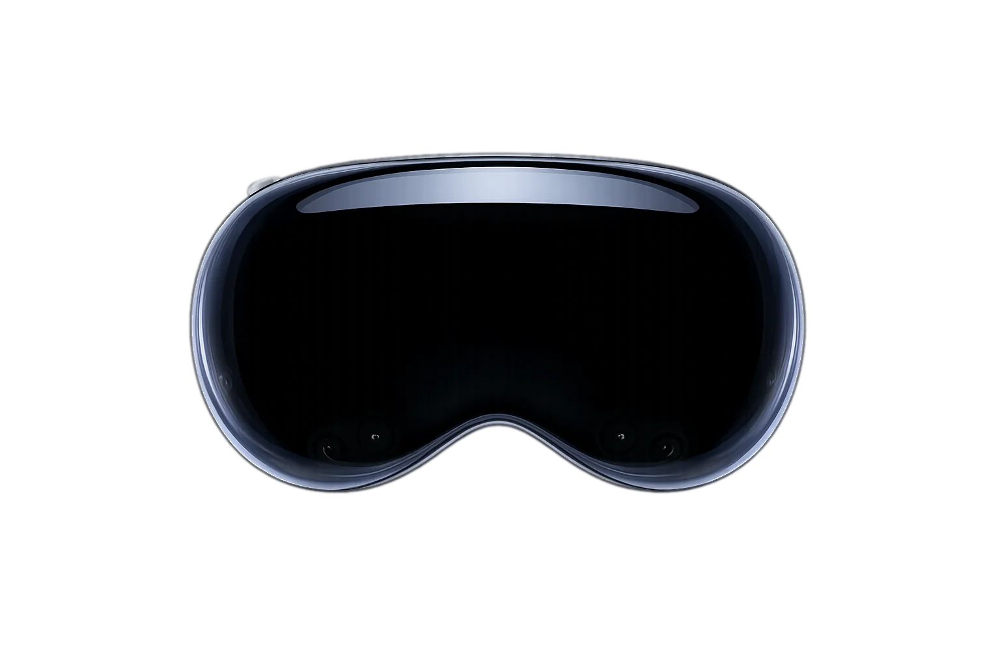

Design, visualize, and price outdoor spaces in real time with AR — all before breaking ground.
Built for Apple Vision Pro

A spatial landscape design app for Apple Vision Pro. Walk the property, drop life-size plants, and hand off install-ready plans — all before you break ground.
Drop life-size 3D plants into the real yard and walk around them at true mature scale — before you buy a thing.
One tap, one scaled PDF — plant symbols, dimensions, and a full plant schedule. No CAD required.
Itemized PDF estimates with plant pricing and labor — generated while you're still standing in the yard.
Real-world anchors lock the design to the property. Return weeks later and everything snaps back into place.
Hand off the headset. Your install crew sees exactly where every plant goes.
Every specimen is a photogrammetry scan of the real plant — dropped into your client's yard at true mature scale.
Century Plant
Agave americana
Pick a time and we'll walk you through the full spatial experience — live on Apple Vision Pro.
Select a date
Select a time All times are Arizona time (MST)
Choose a date to see available times.
Your details
We'll confirm your time by email shortly.